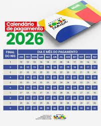

Quais as consequências da guerra com o Irã para os preços do petróleo e a economia global
02/03/2026 07h50

Os preços globais do petróleo subiram em meio aos ataques lançados pelo Irã no Oriente Médio em resposta ao bombardeio realizado pelos EUA e
por Israel contra o país.
O petróleo do tipo Brent, referência global para a cotação da commodity, saltou 10% quando os mercados asiáticos abriram,
no início da segunda-feira (2), chegando a mais de US$ 82 o barril.
Os valores cederam no decorrer da manhã, mas analistas alertam que o cenário
pode ser bem diferente no caso de um conflito prolongado.
O Centro de Operações de Comércio Marítimo do Reino Unido (UKMTO, na sigla em,
inglês) informou que duas embarcações foram atingidas e que um "projétil desconhecido" teria "explodido muito perto" de uma terceira.
Após a
alta inicial, a cotação cedeu para US$ 79 o barril, enquanto o tipo negociado nos EUA, o WTI, registrava aumento de cerca de 7,6%, negociado a
US$ 72,20.
"O mercado não está em pânico", disse à BBC Saul Kavonic, chefe de pesquisa de energia da MST Marquee.
"Há mais clareza de que,
até o momento, a infraestrutura de transporte e produção de petróleo não tem sido um alvo principal de nenhum dos lados", acrescentou.
Detalhes
| Categoria |
Economia |
| Autor |
G1 |
Bolsa Família 2026: veja calendário de pagamentos em março
02/03/2026 00h01

A Caixa Econômica Federal inicia os pagamentos de março do Bolsa Família 2026 no dia 18. Os primeiros a receber serão os beneficiários com Número
de Identificação Social (NIS) com final 1.
O dinheiro será disponibilizado nos últimos 10 dias úteis de cada mês,
de forma escalonada. A exceção é o mês de dezembro, quando os pagamentos são antecipados.
Confira o calendário do Bolsa Família para março de 2026:
- Final do NIS: 1 - pagamento em 18/3
- Final do NIS: 2 - pagamento em 19/3
- Final do NIS: 3 - pagamento em 20/3
- Final do NIS: 4 - pagamento em 23/3
- Final do NIS: 5 - pagamento em 24/3
- Final do NIS: 6 - pagamento em 25/3
- Final do NIS: 7 - pagamento em 26/3
- Final do NIS: 8 - pagamento em 27/3
- Final do NIS: 9 - pagamento em 30/3
- Final do NIS: 0 - pagamento em 31/3
Detalhes
| Categoria |
Economia |
| Autor |
G1 |
‘Prejuízo Master’: o que o colapso do banco mostrou sobre os limites da garantia do FGC
28/02/2026 04h00
Morando em Nova York há quatro anos, onde trabalha como au pair, Marina*, de 27 anos, decidiu investir os R$ 10 mil que havia economizado para voltar ao
Brasil.
Sem experiência no mercado financeiro, recorreu ao ChatGPT em busca de orientações para iniciantes. Atraída pela promessa de retorno elevado e pelo
prazo curto de resgate, optou por um Certificado de Depósito Bancário (CDB) do Banco Master.
Em novembro do ano passado, quando o Banco Central decre-
tou a liquidação da instituição, Marina descobriu que praticamente todo o valor que tinha guardado estava comprometido.
Apesar do susto, conseguiu reaver o
montante por meio do Fundo Garantidor de Créditos (FGC). Segundo ela, o processo foi rápido e levou menos de 24 horas. Mas milhares de outros clientes
ainda aguardam ressarcimento.
“Quando vi o valor creditado, fiquei muito aliviada”, disse Marina. “Quero continuar investindo, mas preciso entender melhor.
Estou começando a assistir a aulas e a procurar informações sobre os melhores tipos de investimento.”
Para especialistas ouvidos pelo g1, a quebra do Banco
Master expõe fragilidades de um modelo de expansão amplamente adotado por bancos, corretoras e fintechs, que se apoiaram na garantia do FGC para vender
CDBs e outros títulos supostamente seguros a investidores com pouco conhecimento sobre o mercado.
- FGC: Fundo Garantidor de Créditos
- Ponto 2
- Ponto 3
Detalhes
| Conteúdo |
Economia |
| Autor |
G1 |